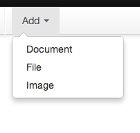
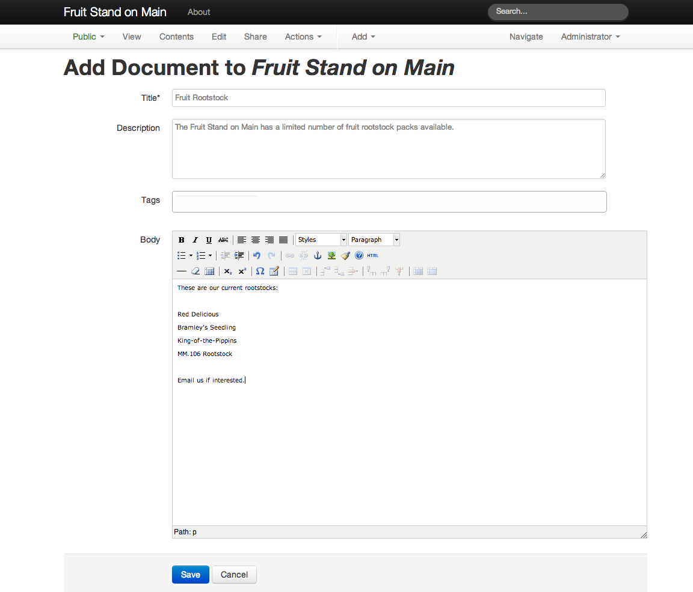
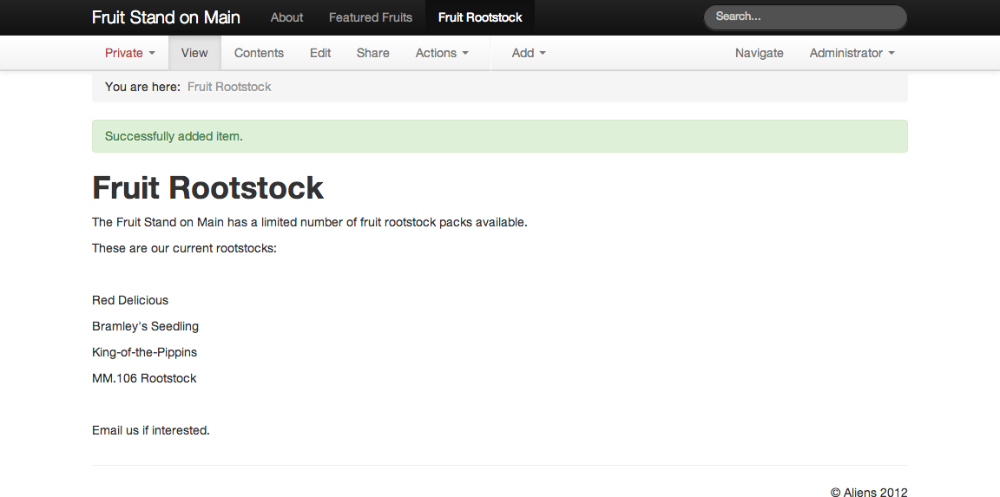

Adding content to a new Kotti website usually involves adding top-level documents for main sections of the website, followed by adding documents within these sections. Documents, Files, and Images are added in course, where they are needed within documents. Before you know it, a nested structure of documents materializes. Kotti makes this a very natural process, principally through the design of the Document content type.
We added the “About” document already, but here details are explained about the process. You recall that we have “Document” as a choice in the “Add” menu:
The web form for adding a Document has the title at the top, then the description, then the body. The title and description have simple text fields for keyboard entry. The body has a special widget, something like that seen in word processing software, for formatting text, headings, and paragraphs. Each of these Document properties has a unique nature.
Let’s add a new top-level document called “Fruit Rootstock” for listing a few fruit tree rootstock packs available at our fruit stand. We will cover the details below, but here is what the add document web form looks like just before the “Save” button is clicked.
The title of a document is, of course, very important. Kotti is smart about how titles are transformed to work as key parts of the “web address” of each document. The counterpart to the title, the part used in the web address, is called the name. You do not enter the name directly. Kotti creates it from the title. For our “Fruit Rootstock” document, the title will be “Fruit Rootstock” and the name will be set to “fruit-rootstock” by Kotti automatically (You won’t see the name when you enter the title, but you will when you look at the web address).
You see web addresses everywhere as you use the Internet. www.google.com is a web address, and so is www.bbc.com. And so is www.bbc.com/news. And so is www.bbc.com/news/asia. These web addresses are called URLs, for Universal Resource Locator, the official name that goes back to the creation of the World Wide Web. When you add a Document, you don’t have to worry so much about the rules of making good URLs from titles, because Kotti takes care it.
The following table shows what the URLs would be for titles of documents about apple rootstock choices (the corresponding name is the part after the last /):
| Title | URL |
| Red Delicious | www.example.com/apples/red-delicious |
| Bramley’s Seedling | www.example.com/apples/bramleys-seedling |
| King-of-the-Pippins | www.example.com/apples/king-of-the-pippins |
| MM.106 Rootstock | www.example.com/apples/mm-106-rootstock |
You see that blanks are replaced by dashes. Special characters such as apostrophes are ignored, backslashes are replaced with dashes, and so on. Look at the URLs again. Kotti ensures that they are clean and simple, and that you can make the titles however you want without worry.
The title is mandatory. You have to have one to make the URL for the document.
Kotti follows the tradition of CMS software in the handling of descriptions. Descriptions are plain text-only. You can’t make some words bold. You can’t make paragraphs. These restrictions may cramp your style, literally, but they are in place to force a simplicity. If you need special formatted text, put it in the body.
Make good descriptions. Complete sentences with proper punctuation are great. Use words that fit the item, thinking of keywords that would match search text strings you imagine people would use. Keep it fairly short.
We follow these rules for our “Fruit Rootstock” document description.
The description is optional, but it is a good habit to write one, because it provides more searchable text.
Tags are keywords that are unique site-wide. The tags entry field is smart. After you have typed a few characters, for example “roo” in rootstock, Kotti will check the existing set of tags for the site for matches, and if it finds a pre-existing tag, or several tags, that begin with “roo” you will see a small pop-up display of those tags to choose one. When you have entered a new tag or selected an existing tag, hit the tab key to add another.
Tags are optional, but as for descriptions, it is a good habit to add them, because doing so provides an immediate organization of content that can be searched categorically. If you see the rootstock tag anywhere on an item, click it to seach for all content that has been tagged for the rootstock tag. Likewise, use the general search to find content associated with multple tags by using a search string such as “rootstock apple” to find all content items that have been tagged with either the rootstock or apple tags.
When we tag our “Fruit Rootstock” document with the “rootstock” tag, as this is its first use, so Kotti will create it anew.
The Document body is where you add the real content. Add text, format words for bold, italic, underline, and other formatting options. Select a paragraph and indent it. Select several paragraphs and make a bulleted list. Create headings. You have the normal range of features available in word processing software.
But you have more. Make a blank line and put the text cursor on the blank line. Click the button to add an image and browse to find a photograph on your local computer. When you add the image, Kotti will put it at the position of the text cursor on the blank line. You can do the same for adding an image at the beginning of a paragraph. Click to place the text cursor at the first character, on the first line of the paragraph, then click the button to add the image. The text will wrap around the image by default, but you have several image-to-text formatting options. This also works like a word processing software, for embedding images in a document.
We list the available rootstock in the body of our “Fruit Rootstock” document.
Each Add and Edit form in Kotti has a button that you click to save. When you do, you will see the view change to that of the content type created. Having entered the title, description, tags, and body for our new document, we save and we then see the view for the new document:
